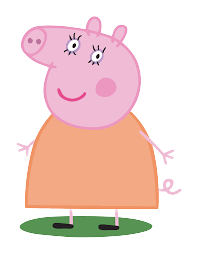
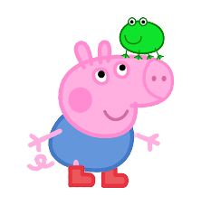

Biographie
Peppa pig est une petite truie créé en 2004 par Neville Astley et Mark Baker. Lors de la première saison, elle avait 6 ans. La dernière saison étant sortie en 2021, elle a donc désormais 23 ans, ce qui est un record pour un cochon, l'âge de vie moyen d'un porc étant de 15 à 20 ans.
Une vie dédiée au divertissement des plus jeunes
Après plus de 300 épisodes, Peppa est toujours aussi suivie dans les pays dans lesquelles la série est diffusée : Etats-Unis, Canada, France, Royaume-Uni et Irlande. La plupart des épisodes pouvant être trouvé sur Youtube, il est très facile, peu importe sa génération de regarder la petite Peppa s'amuser et vivre des mésaventures
Synopsis
Durant les épisodes, de nombreuses mésaventures vont arivées a peppa, comme dans l'épisode "Des fleurs géantes dans le jardin de peppa" où un tournesol géant va pousser dans son jardin !!! Mais malgré les péripéties de peppa, elle reste une petite fille qui adore sauter dans les flaques de boue, jouer avec son ours en peluche qui s'appelle Teddy, penser être la plus belle et aller à l'aire de jeu.
La famille de Peppa
Papa pig

C'est le père de Peppa et de Georges, il travaille comme architecte chez les autres animaux du monde de Peppa et porte des lunettes à cause de sa mauvaise vue.
Maman pig
Maman cochon travaille à la maison sur son ordinateur et s'occupe de Peppa et de Georges. Dans l'episode du camion de pompier (s3 ep13), elle est même pompier volontaire.
George
George est le petit frère de Peppa, il se ballade la plupart du temps avec son doudou, appelé "monsieur dinosaure", c'est un dinosaure tandis que George est un cochon, et non pas un dinosaure comme son doudou : "Monsieur dinosaure" qui lui, est un dinosaure tandis que George n'en est pas un, de dinosaure : c'est un cochon.